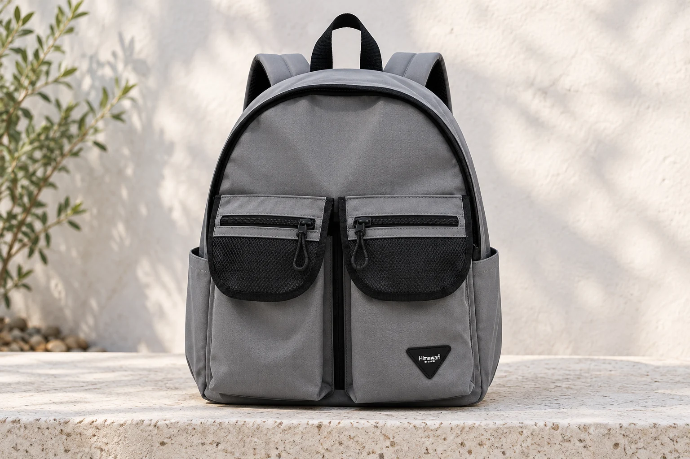
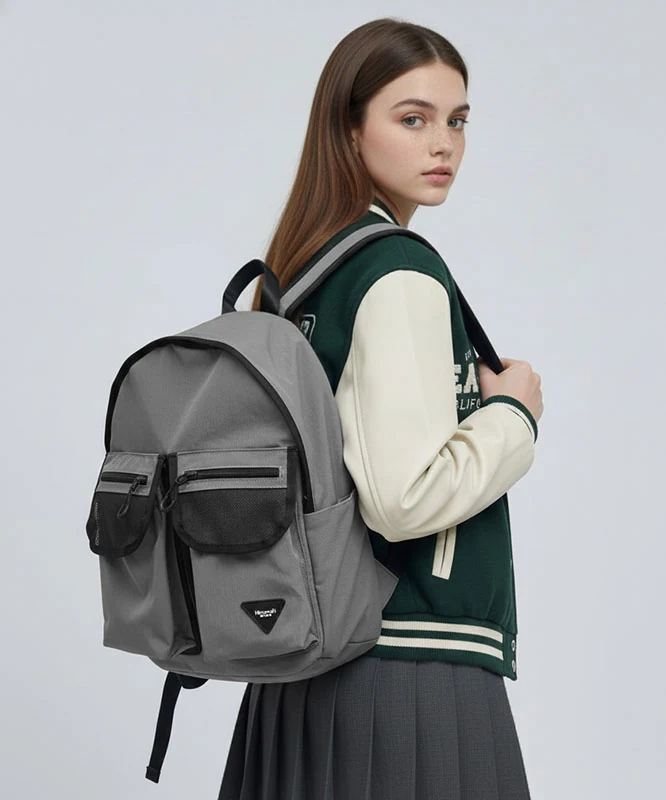
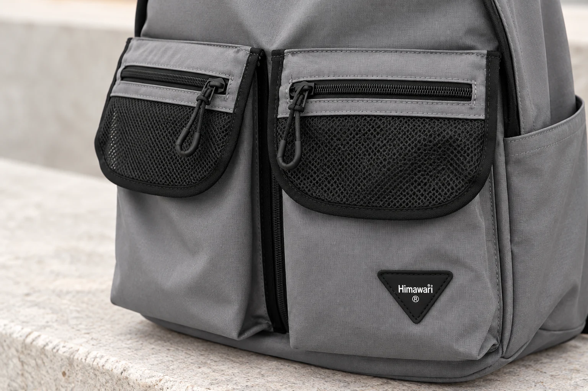

앞포켓 두 개가 나란한 백팩, 왼쪽은 누구 기준일까

“왼쪽 앞포켓에 있어요.” 가방을 사이에 두고 물건의 위치를 설명할 때 자연스럽게 나오는 말입니다. 그런데 가방을 돌려 잡거나 서로 다른 쪽에서 보면 손이 향하는 곳이 달라질 수 있습니다. 나란한 포켓 두 개가 비슷하게 생겼다면 좌우라는 말만으로는 어느 쪽을 뜻했는지 분명하지 않습니다. 포켓을 더 잘 기억하려고 내용물부터 바꾸기 전에, 가방을 어느 방향에서 보고 말했는지 살펴볼 수 있습니다.
No.1230 그레이의 실제 제품 사진에는 길쭉한 앞포켓 두 개가 나란히 보입니다. 각 포켓 윗부분에는 검은 가로 지퍼와 둥근 메쉬 모양 덮개가 있고, 한쪽 아래에는 검은 삼각형 브랜드 패치가 있습니다. 같은 색과 비슷한 윤곽 안에도 서로 구별할 표식이 남는 구조입니다. 여기서는 포켓별 내부 치수나 수납 품목을 정하기보다, 이 표식을 가방의 방향과 연결하는 방법을 생각해 봅니다.
장면 하나, 책상에 가방 앞면을 마주 놓았을 때
가방을 앞면이 보이도록 세워 놓으면 화면이나 시야의 왼쪽과 오른쪽을 쉽게 가리킬 수 있습니다. 메모에도 ‘정면에서 보아 왼쪽’이라고 적을 수 있습니다. 이때의 정면은 둥근 큰 지퍼 선과 나란한 두 포켓이 보이는 면입니다. 어깨끈과 등판이 보이는 면과 구별해 두면 사진을 받은 사람도 같은 방향을 찾기 쉽습니다. 모델 번호만 적은 메모보다 어느 면을 보고 있는지가 중요해지는 순간입니다.
가방을 등판 쪽으로 돌리면 정면을 보고 정했던 좌우를 그대로 눈앞의 좌우에 옮길 수는 없습니다. 회전하기 전과 후에 같은 포켓이 화면의 다른 쪽으로 보일 수 있기 때문입니다. ‘내 왼손이 닿는 쪽’도 언제나 같은 포켓을 가리키지는 않습니다. 가방을 앞에 안고 있는지, 옆에 내려놓았는지에 따라 손이 접근하는 방향이 달라집니다. 좌우를 몸의 위치와 연결할 때에는 현재 자세라는 조건이 붙습니다.

이럴 때는 원래 있는 삼각 패치가 단서가 됩니다. 실제 사진에서 어느 포켓에 패치가 있는지 보고, ‘삼각 패치가 붙은 앞포켓’과 ‘패치가 없는 반대 앞포켓’처럼 구별해 보세요. 가방을 돌려도 패치는 같은 부위에 남습니다. 다만 패치가 가려진 상태에서는 먼저 앞면을 확인해야 합니다. 이 단서는 물건을 보지 않고 찾아낼 수 있다는 보장이 아니라, 방향을 다시 맞출 기준입니다.
장면 둘, 앞포켓을 열고 다시 닫는 동안
닫힌 앞면에서는 포켓 둘이 나란히 보이지만, 한쪽을 열면 덮개와 지퍼 손잡이의 위치가 바뀔 수 있습니다. 열려 있는 쪽만 보고 늘 그쪽이 같은 용도라고 기억하면 두 포켓을 모두 쓴 뒤 헷갈릴 수 있습니다. 지퍼의 현재 위치는 사용에 따라 움직이는 단서이고, 패치와 포켓의 부착 위치는 같은 자리에 남는 단서입니다. 무엇이 움직이고 무엇이 남는지 구별하면 원래 위치로 돌아오기가 수월합니다.
예를 들어 확인할 물건이 패치 없는 쪽에 있다고 정했다면, 그 물건을 꺼낸 뒤 가방 앞면과 패치를 한 번 더 보고 되넣을 수 있습니다. 이 예시는 특정 크기의 물건이 실제로 들어간다는 수납 보장이 아닙니다. 자신이 쓰는 물건이 해당 입구와 안쪽에 맞는지는 별도로 확인해야 합니다. 위치를 기억하는 방식과 포켓의 적합성을 판단하는 방식은 서로 대신하지 못합니다.

두 앞포켓의 겉모양이 닮았다고 내부까지 같은 크기이거나 같은 구조라고 단정할 수도 없습니다. 큰 메쉬 모양 부분과 위쪽 가로 지퍼가 각각 어떤 공간에 이어지는지는 실제 개폐 모습이나 안내를 보아야 합니다. 사진 속 검은 선의 수만 세어 수납칸 수를 늘려 적지 않습니다. 먼저 실제로 쓰는 입구를 특정한 다음 그 입구를 가리킬 이름을 정하면, 겉의 구별과 안의 사용이 이어집니다.
위치를 구별하려고 긴 끈이나 큰 키링을 바로 더할 필요는 없습니다. 기존 표식을 사용할 수 있는지 먼저 보고, 별도 표시가 필요하다면 지퍼의 움직임이나 다른 포켓의 입구를 가리지 않는지 살펴봅니다. 구별을 위한 장식이 옆 포켓에 닿거나 두 지퍼 손잡이를 함께 묶어 버리면 새로운 동작이 생깁니다. 지금 헷갈리는 이유가 시야의 방향인지, 두 공간의 용도가 자꾸 바뀌는 것인지 먼저 나누어 보는 편이 좋습니다.
장면 셋, 다른 사람이 가방에서 물건을 찾아줄 때
가족이나 동행이 가방을 받아 들었다면 자신의 손 위치보다 가방에 남은 표식으로 설명하는 편이 분명합니다. “앞면이 보이게 놓고, 삼각 패치가 없는 쪽의 가로 지퍼를 봐 주세요”처럼 면과 표식, 입구를 연결할 수 있습니다. 상대방은 같은 방향을 찾은 뒤 필요한 여밈을 확인하게 됩니다. 설명이 조금 길어도 ‘그 반대쪽’이라는 말을 여러 번 주고받는 것보다 가리키는 대상을 맞추기 쉽습니다.
사진으로 설명할 때에도 가까운 포켓만 잘라 보내기보다 패치나 두 포켓의 경계가 같이 보이는 한 장을 남깁니다. 화면의 좌우를 뒤집는 기능을 쓴 사진이라면 원래 제품 사진과 방향이 다르게 보일 수 있습니다. 전달할 사진이 뒤집힌 상태인지 확인하고, 필요하면 ‘사진에서 보아 오른쪽’처럼 기준을 붙입니다. 받은 사람이 같은 화면을 보며 확인할 수 있어야 위치 설명이 성립합니다.
가방을 함께 쓰면서 두 앞포켓의 용도를 바꾸었다면 위치 기준은 유지한 채 바뀐 내용만 알려줄 수 있습니다. ‘패치 있는 쪽’은 그대로이고 그 안에 넣는 물건이 달라졌다는 식입니다. 반대로 포켓의 용도도 바꾸고 좌우를 부르는 기준도 바꾸면 두 가지 약속을 동시에 다시 익혀야 합니다. 원래 구조에 남는 표식을 써 두면 바뀐 정보를 설명할 부분이 줄어듭니다. 개인 물건의 이름을 바깥에 크게 표시하지 않아도 되는 방법이기도 합니다.
No.1230의 확인된 외부 크기는 가로 32 × 세로 40 × 폭 18cm이며, 겉감은 나일론·안감은 폴리에스터로 안내되어 있습니다. 이 전체 치수로 앞포켓 하나의 깊이나 폭을 알 수는 없습니다. 두 포켓의 위치가 구별된 다음에는 실제로 쓸 물건과 여밈을 확인하는 단계가 남습니다. 먼저 정면을 찾고, 같은 자리에 남는 표식을 보고, 사용할 입구를 짚어보세요. ‘왼쪽’이라는 한 단어에 기대던 설명이 가방의 구체적인 모습과 연결됩니다.